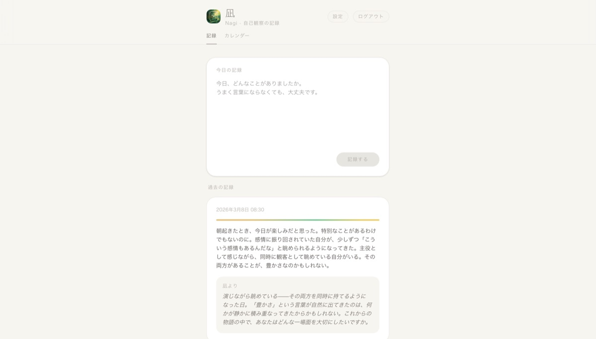
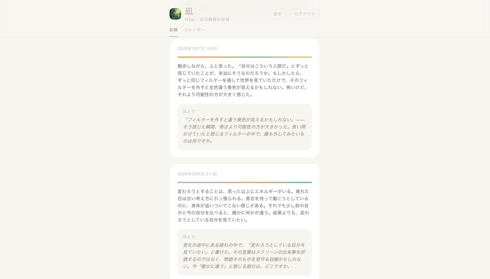
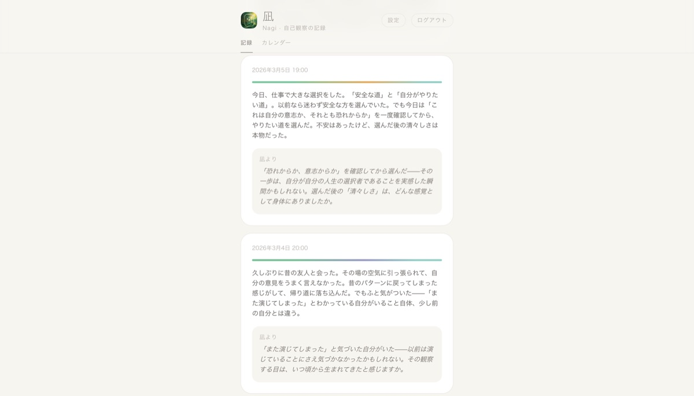
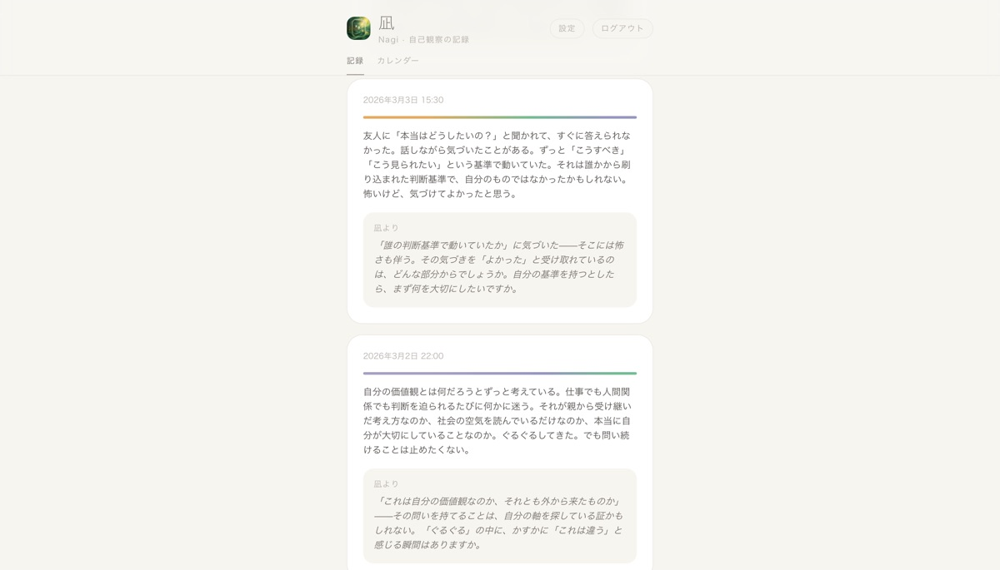
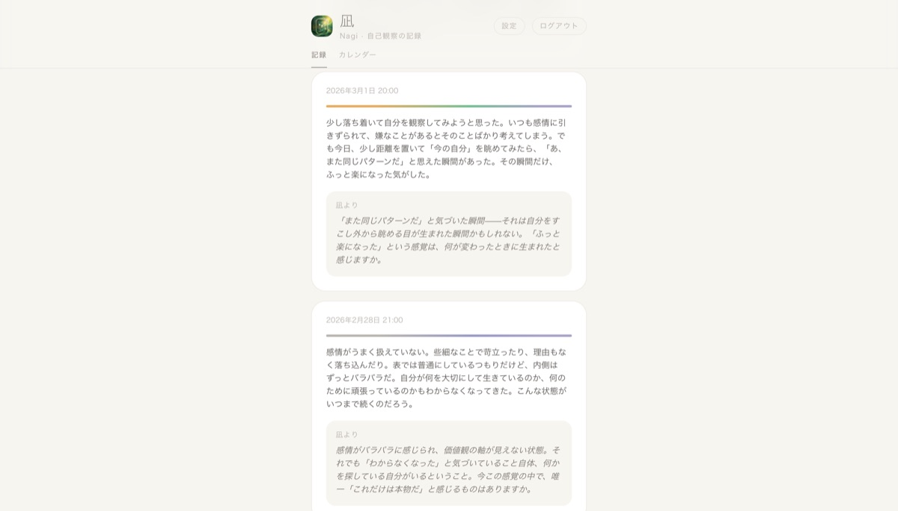
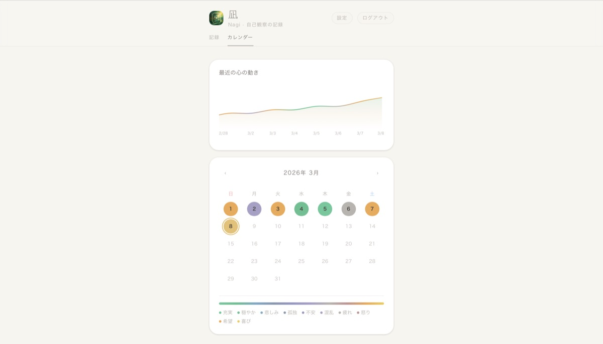
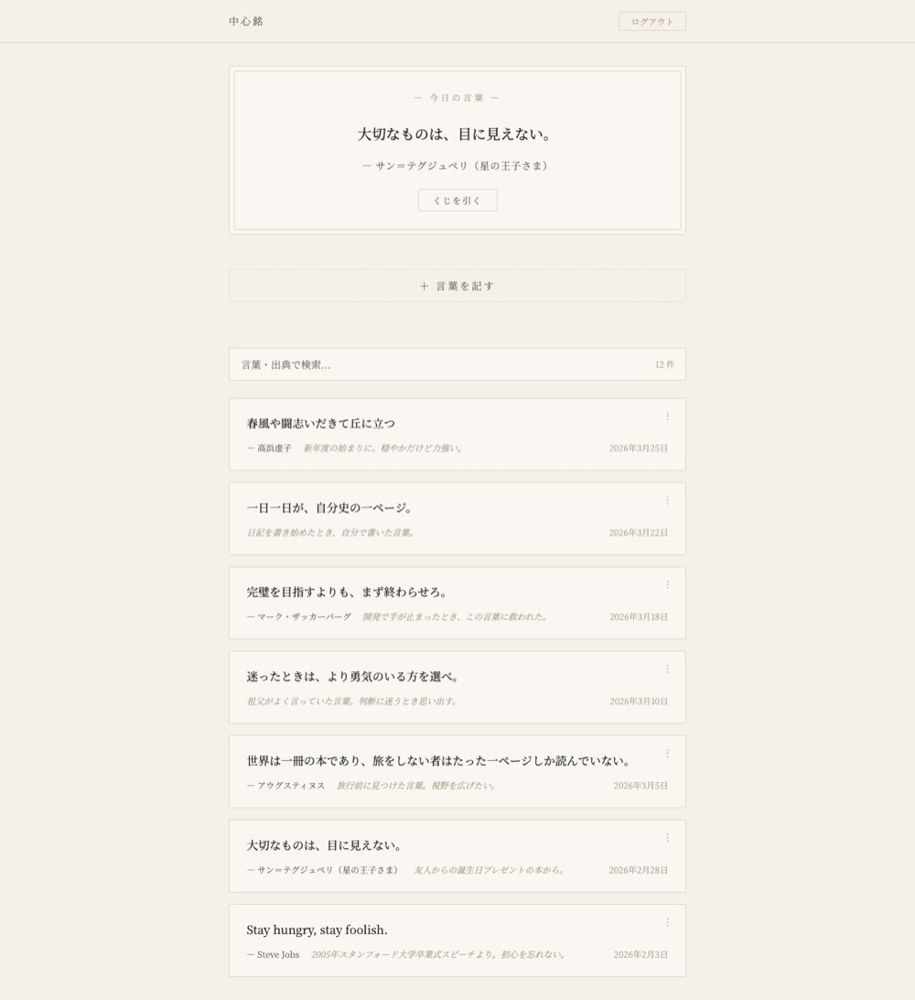
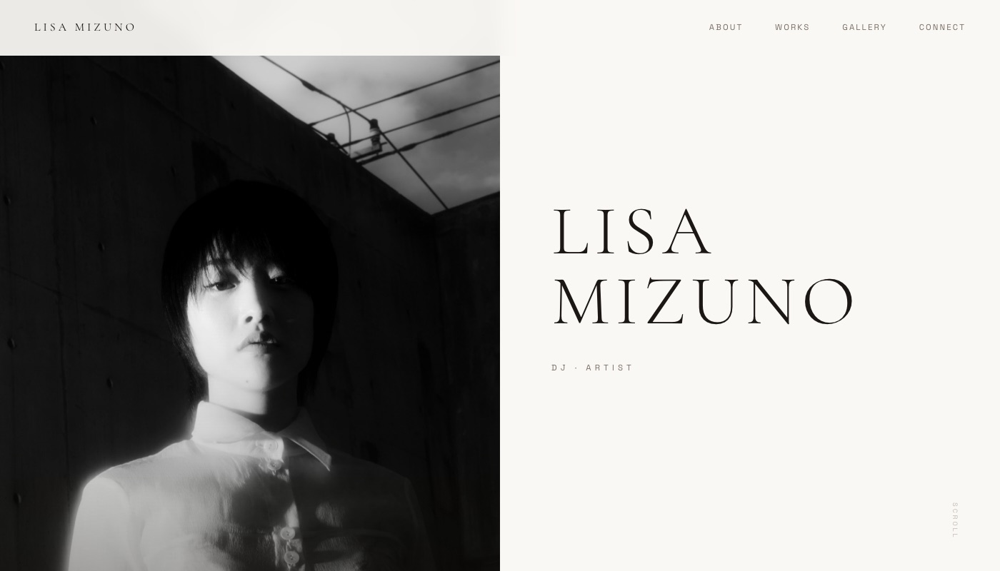

Builder
滝本 哲也
Web開発・自動化フロー・ツール開発と、非日常体験イベントの企画主催。 生活を豊かにするアイデアを形にしています。
about
現世とは心を高めるために与えられた期間であり、 魂を磨くための修養の場である。 人間の生きる意味と価値は、その錬磨にある。
好奇心の向くまま——探索し、鑑賞し、新しい技術と出会う。与え、分かち合う。
制作

翡翠眼
世界市場を、見通す目。
為替・株式指数・債券・コモディティを一画面に集約したマクロ市場情報サイト。AI（翡翠眼）が7層の情報ソースを統合分析し、日次・週次・月次の3モードで複数シナリオ付きレポートを生成する。「読むと視界が変わる」——それを設計の核に置いた。
View





Nagi（凪）
自己を観る。
評価しない、ただ問う。
書くたびに、視界が広がる。
感情に振り回されず、ありのままを把握する。評価も助言もしないAIが、あなたの隣に座る。
日々の想いを書き込むと、AI「凪 -Nagi-」が静かな問いかけを返してくれる自己観察アプリ。あなたがまだ使っていない視点が、そこにある。出来事を一つの角度だけで捉えず、多面的な視点の扉を開けることで、自己理解と他者理解を静かに深めていく。

中心銘
大切な言葉を、手元に。
心に響く言葉を記録し、出典やメモとともに保存できるパーソナル名言管理アプリ。「今日の言葉」機能で毎日ランダムに一つの言葉と再会でき、共有リンクで大切な言葉を他の人に贈ることも可能。和紙調の温かみあるUIで、言葉と静かに向き合う体験を提供。
ViewFrequency Analyzer
音を、視る。
マイク入力から周波数・音量・音名をリアルタイム解析するオーディオツール。Three.js による3D周波数リング可視化とスペクトル表示を実装。ライト／ナイトモード切り替え対応。
View
Lisa Mizuno
響きを、編む。
DJ・アーティスト Lisa Mizuno のアーティストポートフォリオサイト。「間・和・祈り」という日本文化の精神性を軸に、電子音楽と身体表現を融合させた活動を紹介する。モノクロームのミニマルな構成で、コラボレーション実績・ギャラリー・各種音楽プラットフォームへの導線を静かに整理した。
View催し
言葉


連絡
制作のご相談、催しへのお誘い——ご連絡をお待ちしております。